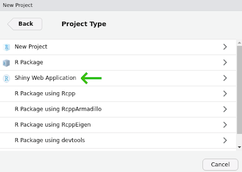
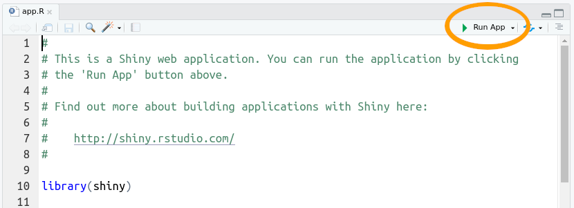
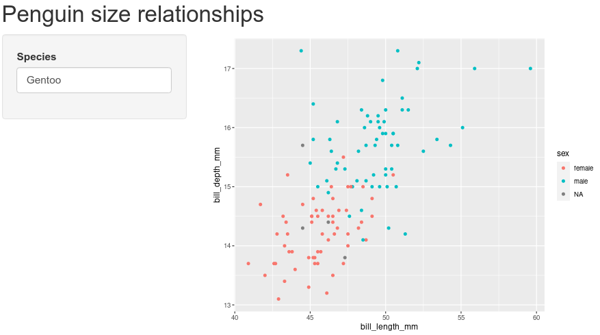
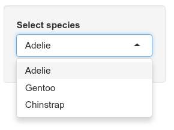
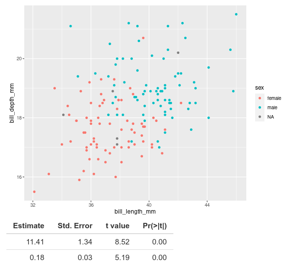
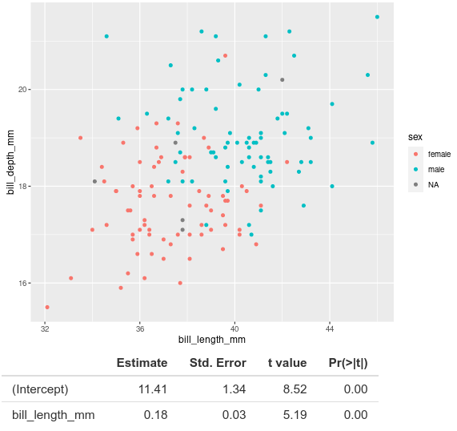

install.packages("shiny")
install.packages("ggplot2")
install.packages("palmerpenguins")Interactive web apps with Shiny
The Shiny package for R provides a way to transform your R code into interactive applications accessible through a web browser. This lesson provides a hands-on example of how you can use Shiny to create intuitive graphical user interfaces.
Learning objectives
- Explain the different responsibilities of the user interface and the server function
- Manipulate user interface options in side panels
- Apply defensive programming techniques to reduce errors
- Diagnose problems with Shiny built-in debugging features
- Share the application through shinyapps.io
Description
While the R programming language is immensely popular, not everyone has the time or resources to learn how to use it (a shame, I know). How then, can you share your awesome data visualization tools that you wrote in R? The Shiny package provides the architecture to build beautiful web applications without writing a single HTML tag. This workshop will introduce some of the functionality of the package as well as platforms you can use to share your work.
Getting started
To start with, we will need to install the shiny package for R. For this lesson, we also be using the ggplot2 package for data visualization and the palmerpenguins package for our data source.
Note, I misspell “palmerpenguins” more frequently that I would like to admit, so if you encounter installation problems with that package, double-check to make sure it is spelled correctly.
We are now ready to start our Shiny Application!
- From the File menu, select New Project…
- Choose “New Directory” in the first dialog
- In the Project Type dialog, select “Shiny Web Application”, which is probably the third option in the list. If you do not see this as an option, try shutting down RStudio and starting it up again.

Name your project “shiny-lesson” and be sure you save it somewhere you can remember (I usually save these lessons to the Desktop or My Documents).
Two halves make an app
The shiny application file you just created has the two critical parts:
ui, which starts on line 13.uihandles all communication with the user: it records choices and information that the user inputs and displays any output based on those selections.serverwhich starts on line 36.servertakes care of any calculations and does the heavy lifting for creating any data visualizations.
The ui code:
# Define UI for application that draws a histogram
ui <- fluidPage(
# Application title
titlePanel("Old Faithful Geyser Data"),
# Sidebar with a slider input for number of bins
sidebarLayout(
sidebarPanel(
sliderInput("bins",
"Number of bins:",
min = 1,
max = 50,
value = 30)
),
# Show a plot of the generated distribution
mainPanel(
plotOutput("distPlot")
)
)
)The server code:
# Define server logic required to draw a histogram
server <- function(input, output) {
output$distPlot <- renderPlot({
# generate bins based on input$bins from ui.R
x <- faithful[, 2]
bins <- seq(min(x), max(x), length.out = input$bins + 1)
# draw the histogram with the specified number of bins
hist(x, breaks = bins, col = 'darkgray', border = 'white')
})
}There is actually an important third part of the the file, too, at the very end. Line 49 has:
shinyApp(ui = ui, server = server)This command actually starts up the application so you can actually use it, so make sure not to delete it.
Test drive the app
Whenever you start a new Shiny app, the file will have the bare bones of an app as in the file you see here. Let us first see what this app does, then we will modify it for our own uses. Press the “Run App” button at the top of the app.R script.

This app takes one piece of input from the user (the number of bins to use for the histogram) and updates the visualization based on the user’s selection.
If we look back at the code in our app script, the ui section adds the title we see at the top of the app (“Old Faithful Geyser Data”) and calls the function sidebarLayout(). This is where most of your code for communicating with the user is going to be. Here it does two things:
- Creates the slider with
sliderInput() - Displays the plot with
plotOutput()
You probably also noted that the slider controls are with a call to sidebarPanel() and the plot display happens inside a call to mainPanel(). We will not mess around too much with this, but in general we will use sidebarPanel() to gather user input and mainPanel() for any output we want to display.
Don’t start from scratch
Our goal is to create an app that allows users to choose among three species of penguins (Gentoo, Adelie, and Chinstrap) and display a plot of bill length vs. bill depth.
Now, we want an application that has nothing to do with geyser eruptions, but instead of deleting everything in the file and starting from scratch, we start by adding comments to indicate what we want to do and commenting out the original code. We can delete the old code later, but for now we can keep it to remind us of how shiny apps work.
Since our app will use the ggplot2 and palmerpenguins packages, go ahead and add library calls to those two packages right after the shiny package is loaded.
library(shiny)
library(palmerpenguins)
library(ggplot2)Start by updating the title in the call to titlePanel()
titlePanel("Penguin size relationships")Change the comment above sidebar layout to indicate what we want users to do, that is, we will want them to select the name of a penguin species.
# Sidebar with text input for penguin species
sidebarLayout(
sidebarPanel(We can also update the comment above the main panel code to reflect the type of plot we will display.
# Show a size plot for selected speciesWe are still at the point of writing comments, which are really instructions to ourselves about the code we need to write. So scroll on down to the server section add add a comment before output$distPlot <- renderPlot (around line 37 in the file):
# Create size plot for penguin speciesNow we start updating the code
At this point we haven’t changed much besides some comments. If you run the app, it is still going to be the one plotting eruptions of Old Faithful. There are two changes we need to make to the actual code: one in the ui function and one in the server function. The first (in ui) is all about getting information from the user.
Navigate to the sidebar panel, has a sliderInput function:
# Sidebar with text input for penguin species
sidebarLayout(
sidebarPanel(
sliderInput("bins",
"Number of bins:",
min = 1,
max = 50,
value = 30)
),Start by deleting the sliderInput:
# Sidebar with text input for penguin species
sidebarLayout(
sidebarPanel(
),And add, inside the call to sidebarPanel, a call textInput:
# Sidebar with text input for penguin species
sidebarLayout(
sidebarPanel(
textInput(inputId = "species",
label = "Species",
value = "Gentoo")
),For textInput:
inputId = "species"is the identifier for the information the user enters; we will see this in use later in theserversection. Just remember that we used all lower-case letters.label = "Species"is the text that will appear to the user. Note here we capitalized “Species”.value = "Gentoo"indicates the default value thatspecieswill take.
The next change occurs in the server section. Navigate to the comment we added about creating a plot (around line 35 of the file):
# Create size plot for penguin species
output$distPlot <- renderPlot({
# generate bins based on input$bins from ui.R
x <- faithful[, 2]
bins <- seq(min(x), max(x), length.out = input$bins + 1)
# draw the histogram with the specified number of bins
hist(x, breaks = bins, col = 'darkgray', border = 'white')
})Since we are not going to use the code for plotting a histogram, we can delete all the code within renderPlot (but be sure to leave the opening ({ and closing })):
# Create size plot for penguin species
output$distPlot <- renderPlot({
})And we now add our ggplot2 commands to create a scatter plot of bill depth versus bill length. (not familiar with ggplot2? Check out the introduction to ggplot lesson).
# Create size plot for penguin species
output$distPlot <- renderPlot({
ggplot(data = penguins[penguins$species == input$species, ],
mapping = aes(x = bill_length_mm,
y = bill_depth_mm,
color = sex)) +
geom_point()
})Note the data we specified to use for the plot:
data = penguins[penguins$species == input$species, ]penguins$species is the data set we loaded from the palmerpenguins package, but what about that input thing? Where did that come from? Remember the work we did on the SidebarPanel, and the inputId? The input object in the server section of our app has all the information we collect from the ui section of our app. We will play with this more in a bit, but now it is time to test our app! Save any changes to your app.R file, and press the Run App button in the top-right of your script. You should see

Try replacing “Gentoo” with “Chinstrap”, then with “Adelie”. Note the points change in the plot for the different species.
PEBKAC
If you are like me, you probably managed to misspell “Adelie”. If you didn’t, try it. What happens? When we enter the name of a species that does not correspond to the three species in the data set (or if you misspell them), R will try to pull out data for species that do not exist. You can see this behavior by typing the following in your R console:
penguins[penguins$species == "Adele", ]# A tibble: 0 × 8
# ℹ 8 variables: species <fct>, island <fct>, bill_length_mm <dbl>,
# bill_depth_mm <dbl>, flipper_length_mm <int>, body_mass_g <int>, sex <fct>,
# year <int>The resulting data has zero rows because there are no rows with “Adele” in the species column. remember that when we used this syntax in our server section, it was pulling the value from input$species:
data = penguins[penguins$species == input$species, ]If a user types in an incorrect value, R will try to make a plot anyways. But if your user does not know how to spell Adelie, their error will not be evident. To improve the experience a user will have when interacting with your Shiny app, we can use Defensive programming techniques to reduce these errors. In our app, we let users type in the name of the penguin species, but instead of a text box, we can use a dropdown menu so users could only choose species that match rows in the penguins data. Let us change the input from textInput to a dropdown menu. Start by navigating to the sidebarPanel call:
# Sidebar with text input for penguin species
sidebarLayout(
sidebarPanel(
textInput(inputId = "species",
label = "Species",
value = "Gentoo")
),and replace textInput with a call to selectInput:
# Sidebar with text input for penguin species
sidebarLayout(
sidebarPanel(
selectInput(inputId = "species",
label = "Select species",
choices = unique(penguins$species))
),We will leave inputId as the same value, after all, the server section is expecting a value for which species to use. We can update label to provide a little more guidance for the user. Finally, instead of providing a default value, we provide a list of choices; in this case, the only options available are the unique values in the species column of the penguin data. You can see these values by typing the following in the console:
unique(penguins$species)[1] Adelie Gentoo Chinstrap
Levels: Adelie Chinstrap GentooOnce you have the selectInput information added, save the file and run the app with the Run app button. Now the text input field should be replaced with a dropdown menu of penguin species. No more misspelled species names!

Shiny: not just for plots
We are not limited to only providing graphical output. We can also provide the use text or tabular output. We can see this by adding the results of a linear regression model to the output of our app. This time, we are going to work backwards: first we will write code in the server section to run the linear model, then we will update the ui section to show the results. Navigate to the server section with your ggplot code:
# Create size plot for penguin species
output$distPlot <- renderPlot({
ggplot(data = penguins[penguins$species == input$species, ],
mapping = aes(x = bill_length_mm,
y = bill_depth_mm,
color = sex)) +
geom_point()
})Immediately following that closing }), we can add the code for regression. But before we do, note where our plot is stored. That is, all the code for our plot is in a call to renderPlot and that is assigned to the variable output$distPlot. Hmm, output you say? Just like we use the input variable to send information from the ui section to the server section, we can use output to send information in the opposite direction (server \(\rightarrow\) ui). So we start by creating a new variable in the output object, and use the renderTable method instead of renderPlot. Remember to add a comment about the rationale for the code. We start after the }) from renderPlot:
geom_point()
})
# Add results of a linear model to output
output$statsTable <- renderTable({
})Inside the call to renderTable, we can add the R code for performing a linear regression between bill length and bill width, extracting the summary statistics from the model, and pulling out the coefficient estimates from the model:
# Add results of a linear model to output
output$statsTable <- renderTable({
# Create the linear model
# Extract summary statistics
# Print coefficient table
})And with those comments in place, we can fill in code as appropriate:
# Add results of a linear model to output
output$statsTable <- renderTable({
# Create the linear model
model <- lm(formula = bill_depth_mm ~ bill_length_mm,
data = penguins[penguins$species == input$species, ])
# Extract summary statistics
model_summary <- summary(model)
# Print coefficient table
model_summary$coefficients
})Note that our plot shows one penguin at a time, so we need to be sure to subset the data in our call to lm like we did for the plot. We do this by using the value stored in input$species like we did previously:
data = penguins[penguins$species == input$species, ]So we updated our server to run a model, but how do we get it to show up? If you press the Run App button, you’ll notice that nothing is changed. Just like the plot, we have to explicitly tell the ui section to display the information. To do this, navigate to the mainPanel function in the ui section (it should be around line 29):
# Show plot
mainPanel(
plotOutput("distPlot")
)We need to add the results from our linear regression model to the main panel output. For the plot, we used plotOutput, but since we are displaying a table, we use…wait for it…tableOutput. After the call to plotOutput, add a comma, then a call to tableOutput, referencing the variable with our table:
# Show plot and statistical results
mainPanel(
plotOutput("distPlot"),
tableOutput("statsTable")
)Note we need to have quotes around the reference "statsTable". Now you can save your file and run the app (press Run App in upper right corner of the panel). If you see an error that includes something like
Error in sourceUTF8(fullpath, envir = new.env(parent = sharedEnv)) :
Error sourcing /home/jcoliver/Desktop/shiny-test/app.Rbe sure that you have a comma after plotOutput("distPlot"). When you run the app, you should now see, below the plot, the results of the linear regression model.

The coefficient estimates and associated statistics show up, but we do not know what they are estimates for. When we look at this table in R, normally we see that the first row corresponds to the intercept and the second row to our coefficient for bill length.
# Create the linear model
model <- lm(formula = bill_depth_mm ~ bill_length_mm,
data = penguins[penguins$species == "Gentoo", ])
# Extract summary statistics
model_summary <- summary(model)
# Print coefficient table
model_summary$coefficients Estimate Std. Error t value Pr(>|t|)
(Intercept) 5.2510084 1.05480901 4.978160 2.152946e-06
bill_length_mm 0.2048443 0.02215802 9.244703 1.015502e-15(If R complains that it cannot find “penguins”, make sure the library is loaded by running library(palmerpenguins) in the console).
The output shows (Intercept) and bill_length_mm, but these turn out to be row names for the coefficients matrix. Taking a look at the documentation for renderTable (type ?renderTable into the console), we see that the default value of rownames is FALSE (look at the Usage section in the documentation). So maybe if we pass rownames = TRUE to renderTable, it will fix the problem. Let’s update the server section where renderTable is called. That is, right after the closing curly brace, }, in renderTable, but before the closing parentheses, ), add , rownames = TRUE:
# Add results of a linear model to output
output$statsTable <- renderTable({
# Create the linear model
model <- lm(formula = bill_depth_mm ~ bill_length_mm,
data = penguins[penguins$species == input$species, ])
# Extract summary statistics
model_summary <- summary(model)
# Print coefficient table
model_summary$coefficients
}, rownames = TRUE)Save your app file and run it again and the names of the coefficients in the model should now appear with the results.

Additional resources
- The invaluable Shiny cheat sheet
- Posit’s resources for debugging Shiny apps
- An interactive Shiny course
- shinyapps.io will host your app so other people can use it
- If you want to build interactive maps in Shiny, take a look at the leaflet package.
- You can also build Shiny apps to work with data that your users upload. Uploads are usually handled by the
fileInputfunction (see documentation) and you can find an example of its use in this RStudio example. - If you want a different look from the default Shiny theme, try
- The shinythemes package for different color schemes. The Shiny theme selector provides examples of all available themes in the package
- The bslib package to create a custom theme. More information on using bslib can be found on RStudio’s page on theming
- The thematic package makes it easier to theme graphics from ggplot2, lattice, and even base R!
- A PDF version of this lesson